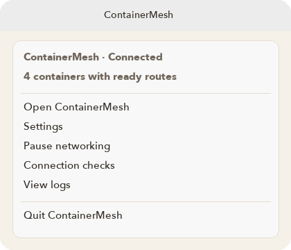

Connection
Automatic connection exists only after Enable automatic networking. Before that choice, pause and resume are not how you start.
Pause and resume
The window shows Pause and Resume. The menu bar shows Pause networking and Resume networking. Pause stops automatic reconnection and keeps that choice the next time ContainerMesh opens, including an open-at-login launch. Resume connects again once the prerequisites are ready.

The menu bar
The menu shows the connection state, then:
- Open ContainerMesh
- Settings
- Open setup, while Setup still applies
- Pause networking or Resume networking
- Connection checks
- View logs
- Quit ContainerMesh
Closing the window does not quit. The menu-bar icon keeps the app available. Quit disconnects for this session. The saved choice is still what the next launch follows: a paused app stays paused, and an app you left connected connects again.
After an interruption
Once you have opted in, ContainerMesh connects at launch. If Docker or a prerequisite drops, it tries again while the saved choice is still to stay connected. It uses the saved configuration, not an unfinished edit in Settings.